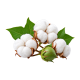

होम / नरमा

नरमा का भाव आज | American / Bt Cotton Mandi Price Today
नरमा का भाव आज जानना किसानों और व्यापारियों के लिए उपयोगी है। इस पेज पर नरमा से जुड़े उपलब्ध records और मंडी जानकारी देखें; तुलना करते समय गुणवत्ता, इकाई और record की तारीख का ध्यान रखें।
Check available American / Bt Cotton mandi prices before you sell. Compare minimum, modal and maximum rates with quality, arrivals and nearby market records.
नरमा का भाव कैसे देखें और रेट किन बातों से बदलता है
नरमा American/Bt cotton की अलग फसल श्रेणी है; इसे देशी कपास के भाव के साथ नहीं मिलाना चाहिए। अलग lot की गुणवत्ता और नमी के कारण बोली बदल सकती है।
आज का नरमा भाव कैसे देखें
इस पेज की मंडी-वार तालिका में न्यूनतम, मॉडल और अधिकतम भाव देखें। अपनी नज़दीकी मंडी तथा उपलब्ध दूसरी मंडियों के भाव की तुलना करके फैसला लेना अधिक उपयोगी रहता है।
- अपनी मंडी या राज्य चुनकर भाव देखें।
- न्यूनतम, मॉडल और अधिकतम भाव में अंतर समझें।
- पुराने और नए उपलब्ध रिकॉर्ड में फर्क देखकर निर्णय लें।
गुणवत्ता और ग्रेड का असर
नरमा में रेशे की गुणवत्ता, नमी, साफ-सफाई और कचरे की मात्रा मूल्यांकन के महत्वपूर्ण आधार हैं। दबाए या गीले माल में अलग कटौती हो सकती है।
आवक, मांग और बाजार
जिनिंग, कपड़ा उद्योग की खरीद, स्थानीय आवक और मौसम की स्थिति नरमा बाजार को प्रभावित कर सकती है। मंडियों की भाव-range देखकर एक ही भाव पर निर्भर न रहें।
नरमा बेचने या खरीदने से पहले ध्यान रखें
- नरमा और देशी कपास के records अलग-अलग देखें।
- माल को सूखा और साफ रखें।
- बोली से पहले कचरे और नमी का अनुमान समझें।
अक्सर पूछे जाने वाले सवाल
Narma ka bhav today
इसकी विस्तृत जानकारी ऊपर दी गई है। कृषि जिंसों के ये दाम दैनिक आवक, गुणवत्ता और बाजार की मांग के अनुसार बदलते रहते हैं। सटीक और ताज़ा आंकड़ों के लिए कृपया ऊपर दी गई तालिका को देखें। हमसे जुड़े रहने के लिए WhatsApp ग्रुप जॉइन करें।